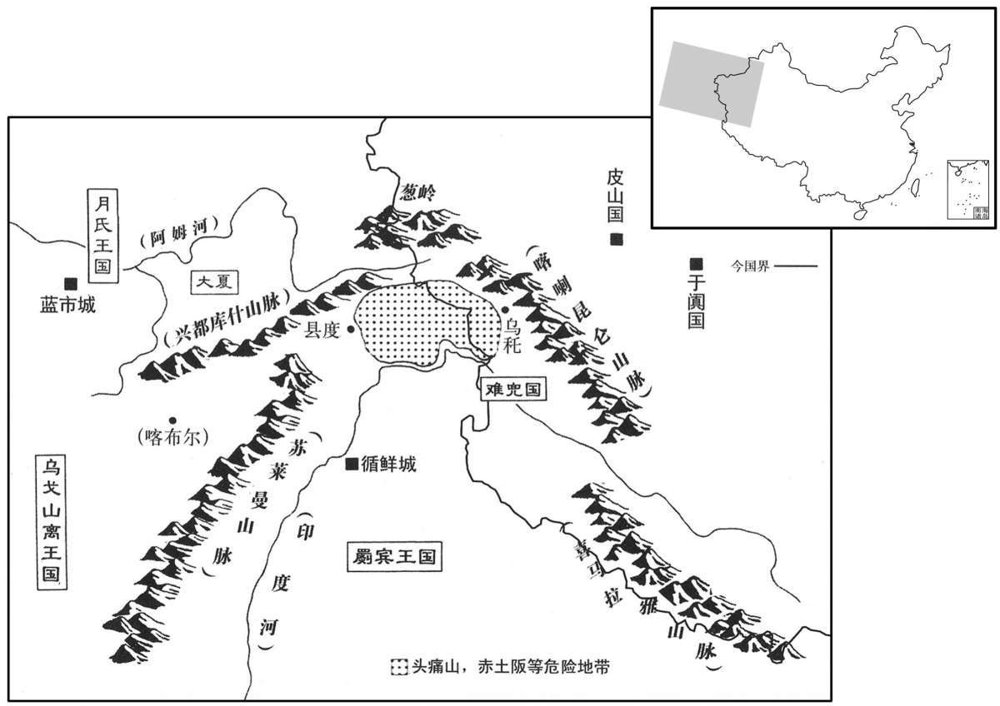

公元前25年资治通鉴：本年记事、原文与白话对照
按原书编年位置阅读；追叙和史论不等于本年发生的事件。白话采用所据译本，缺译不以生成译文补齐。
卷30 · 本年记事
公元前25年 · 汉孝元皇帝河平四年
四年〔（丙申、前二五）〕
上传原文的注释括号有异常，字符原样保留；无法可靠划分的段落默认全文显示。
本年事件索引（现代整理）

本年形势与背景参考图
春，正月，匈奴单于来朝。
春季，正月，匈奴单于来长安朝见。
赦天下徒。
赦免天下囚犯。
二月，癸丑朔，日有食之。
两版字句有差异，建议核对原文。
三月，癸丑朔（初一），出现日食。
琅邪太守杨肜与王凤连昏，〔如淳曰：连昏者，昏家之姻亲也。肜，音以中翻。〕其郡有灾害，丞相王商按问之。凤以为请，商不听，竟奏免肜，奏果寝不下。〔下，遐稼翻；下同。〕凤以是怨商，阴求其短，使频阳耿定上书，〔频阳县，属左冯翊。〕言「商与父傅婢通，及女弟淫乱；奴杀其私夫，〔师古曰：私夫，女弟之私与奸通者。疑商教使。」天子以为暗昧之过，不足以伤大臣。凤固争，下其事司隶。〔句断。下，遐翻。〕太中大夫蜀郡张匡，素佞巧，复上书极言诋毁商。〔复，扶又翻。〕有司奏请召商诣诏狱。上素重商，知匡言多险，制曰：「勿治！」〔治，直之翻。〕凤固争之。夏，四月，壬寅，诏�为茈酮萓L绶。商免相三日，发病，欧血薨，谥曰戾侯。而商子弟亲属为驸马都尉、侍中、中常侍、诸曹、大夫、郎吏者，皆出补吏，莫得留给事、宿卫者。有司奏请除国邑；有诏：「长子安嗣爵为乐昌侯。」〔宣帝之母党微矣。〕
琅邪太守杨肜与王凤是姻亲，琅邪郡发生灾害，由丞相王商查问此事，王凤为杨肜向王商说情，王商不听，竟上奏请求罢免杨肜的官职。奏章上去后，果然留中不下。王凤因此怨恨王商，秘密搜求他的短处，指使频阳人耿定上书弹劾王商说：“王商与他父亲身边的婢女通奸。他妹妹淫乱，奴仆把奸夫杀死，我怀疑奴仆杀人是王商教唆指使的。”天子认为，这些都是无法证明的暧昧过失，不足以构成大罪而伤害大臣。王凤则极力争辩，坚持把此事交付司隶查办。太中大夫、蜀郡人张匡，一向险恶谄媚，也上书极力诋毁王商。主管官员上奏要求召王商到诏狱进行审讯。成帝一向器重王商，知道张匡的话多为阴险不实之词，于是批示说：“不许究治！”王凤仍坚持追究。夏季，四月，壬寅（二十日），成帝下诏，收缴王商的丞相印信、绶带。王商被免相三天后，发病，吐血而死。谥号为戾侯。而王商的子弟亲属担任驸马都尉、侍中、中常侍、诸曹、大夫、郎吏等官职的，全部被调出宫廷补任其他官职，不许留在给事、宿卫等可接近皇帝的位置上。主管官员还上奏，要求撤销王商的封地。成帝却下诏说：“王商长子王安继承爵位为乐昌侯。”
上之为太子也，受论语于莲勺张禹，〔莲勺，音辇酌。〕及即位，赐爵关内侯，拜为诸吏、光禄大夫，秩中二千石，给事中，领尚书事。禹与王凤并领尚书，内不自安，数病，上书乞骸骨，〔数，所角翻；下同。〕欲退避凤；上不许，抚待愈厚。六月，丙戌，以禹为丞相，封安昌侯。〔恩泽侯表，安昌侯食邑于汝南。〕
成帝当太子时，由莲勺人张禹教授《论语》，及至即位，赐张禹为关内侯，拜为诸吏、光禄大夫，官秩中二千石，兼任给事中，主管尚书事务。张禹与王凤共同主管尚书事务，张禹内心不自安，多次称病，上书请求退休，想退让避开王凤。成帝不准，反而待他愈加优厚。六月，丙戌（初五），成帝任命张禹为丞相，封安昌侯。
庚戌，楚孝王嚣薨。
庚戌（二十九日），楚孝王刘嚣去世。
初，武帝通西域，罽宾自以绝远，汉兵不能至，独不服，〔罽宾国，治循鲜城，去长安万二千二百里；不属都护。罽，音计。〕数剽杀汉使。〔数，所角翻。师古曰：剽，劫也，音频妙翻。〕久之，汉使者文忠与容屈王子阴末赴合谋攻杀其王；〔王曰乌头劳，即数杀汉使者也。〕立阴末赴为罽宾王。后军候赵德使罽宾，与阴末赴相失；阴末赴销琅当德，〔师古曰：相失，相失意也。琅当，长锁也，若今之禁系人锁矣。琅，音郎。杀副已下七十余人，遣使者上书谢。孝元帝以其绝域，不录，于其使者于县度，〔县度，在乌秅国西。县度者，石山也，溪谷不通，以绳索相引而度。县，古悬字通、师古曰：悬绳而度也。乌秅，郑氏音鷃拏。师古曰：乌，音一加翻；秅，音直加翻；急言之，声如鷃拏耳，非正音也。〕绝而不通。
两版字句有差异，建议核对原文。
当初，汉武帝通西域，宾国自以为地处绝远，汉兵不能到达，因此只有宾一国不归顺汉朝，还多次劫杀汉使。很久以后，汉朝使者文忠与容屈国王的儿子阴末赴合谋攻杀了宾王，于是立阴末赴为宾王。后来，军候赵德出使宾国，与阴末赴失和，阴末赴用铁链把赵德锁起来，又诛杀汉副使及以下七十余人，然后派使者赴长安上书谢罪。孝元帝因宾远在域外，无法审核此案，就把使节放逐到县度，断绝与宾的来往。
及帝即位，复遣使谢罪。〔复，扶又翻；下同。〕汉欲遣使者报送其使。杜钦说王凤曰：「前罽宾王阴末赴，本汉所立，后卒畔逆。〔说，输芮翻。卒，子恤翻。〕夫德莫大于有国子民，罪莫大于执杀使者，所以不报恩，不惧诛者，自知绝远，兵不至也。有求则卑辞，无欲则骄慢，终不可怀服。凡中国所以为育厚蛮夷，惬快其求者，为壤比而为寇。〔师古曰：比，近也；为其土壤接近，能为寇也。惬，音苦颊翻。为壤之为，于伪翻。比，毗寐翻。〕今县度之総，非罽宾所能越也；其乡慕，不足以安西域；〔乡，读曰向。〕虽不附，不能危城郭。前亲逆节，恶暴西域，〔师古曰：暴，谓章露也。〕故绝而不通；今悔过来，而无亲属﹑贵人，奉献者皆行贾贱人，〔贾，音古；下同。〕欲通货市买，以献为名，故烦使者送至县度，恐失实见欺。遣使送客者，欲为防护寇害也。〔为，于伪翻。〕起皮山，南更不属汉之国四、五，〔皮山国，去长安万五千里。师古曰：言经历不属汉者凡四、五国。更，音工衡翻。〕斥候士百余人，五分夜击刁斗自守，〔师古曰：夜有五更，分而持之。〕尚时为所侵盗。驴畜负粮，须诸国禀食，得以自赡。〔师古曰：禀，给也。赡，足也。食，读曰饮；下同。〕国或贫小不能食，或桀黠不肯给，〔黠，下八翻。〕拥强汉之节，馁山谷之间，乞伹无所得，〔师古曰：伹，亦乞也，音工大翻。〕离一、二旬，则人畜弃捐旷野而不反。又历大头痛、小头痛之山，赤土、身热之阪，令人身热无色，头痛呕吐，驴畜尽然。〔呕，一口翻。吐，土故翻。畜，许救翻；下同。〕又有三池盘、石阪道，莅者尺六七寸，长者径三十里，临峥嵘之不测深，〔莅，与狭同。师古曰：峥嵘，深险之貌。峥，音仕耕翻。嵘，音宏。余谓峥嵘，山峻貌。〕行者骑步相持，〔骑，奇寄翻。〕绳索相引，〔索，昔各翻。〕二千余里，乃到县度。畜坠，未半坑谷尽靡碎；〔师古曰：靡，散也，音縻。〕人堕，势不得相收视；险阻危害，不可胜言。〔胜，音升。〕圣王分九州岛岛，制五服，〔师古曰：九州岛岛，冀、兖、豫、青、徐、荆、扬、梁、雍也。五服，甸、侯、绥、要、荒。余谓此言禹也。周职方，九州岛岛有幽、并，无徐、梁；又分为九服。〕务盛内，不求外；今遣使者承至尊之命，送蛮夷之贾，劳吏士之众，涉危难之路，〔贾，音古。难，乃旦翻。〕罢敝所恃以事无用，〔师古曰：罢，读曰疲。所恃，谓中国之人。无用，谓远方蛮夷之国。〕非久长计也。使者业已受节，可至皮山而还。」〔师古曰：言已立计遣之，不能即止，可至皮山也。〕于是凤白从钦言。罽宾实利赏赐贾市，〔贾，音古。〕其使数年而壹至云。
等到成帝即位后，宾王再次派遣使节到长安谢罪。汉朝打算派使者护送宾使节回国，作为答礼。杜钦劝王凤说：“从前，宾 王阴末赴本是汉朝所立，后来却突然反叛，世上最大的恩德，莫过于使其拥有王位和人民；而最大的罪恶，莫过于拘杀使者。阴末赴之所以不肯报恩，也不怕讨伐，是由于自知离中国遥远，汉兵无法到达。他有求于汉朝时，就卑辞谦恭；无求时，就骄横傲慢，始终无法使他降服。中国之所以交往厚待周边蛮夷，满足他们的要求，是因为疆土相邻，他们易于入境劫掠。如今县度的险阻，宾军队不能越过。他们即使仰慕归顺，对整个西域的安定也起不了太大作用；即令不归顺汉朝，也不能威胁西域诸国的安全。从前，宾王亲自冒犯汉朝使节，罪恶暴露在西域各国面前，中国因此断绝与其来往。如今他们宣称悔过来朝，但所派之人，不是国王的亲属和重要官员，奉献者全是从事商业的贱人，他们是想通商贸易，而以进贡为名，因此本朝烦劳使者护送他们到县度，恐怕不符合他们实际低微的身份，受了他们的欺骗。凡派使者护送客使，目的是保护他们不受盗匪伤害。自皮山国往南走，要经过四、五个不受汉朝管辖的王国。护送的汉军士兵有一百余名，入夜后轮班五次击打刁斗警戒守卫，仍然时常遭到劫掠。用驴子驮载口粮，须由沿途诸国供给食物，才能满足。有些王国又小又贫穷，无法供应食物；有些王国奸猾不肯供给。使者带着强大的汉朝的符节，在山谷之间忍受着饥饿的煎熬，乞讨无门，缺粮一二十天，人畜就会倒毙旷野，不得生还。沿途还要经过大头痛山、小头痛山、赤土坂、身热坂。走到这里，会让人浑身发烧，面无人色，头痛呕吐，驴畜也都如此。又有三池盘、石坂道，窄的地方只有一尺六、七寸宽，而长度却有三十里。山径旁是陡峭不测的深谷，马匹与行人互相扶持，用绳索前后牵引。走二千余里，才能到达县度。牲畜失足坠落，在离谷底还不到一半距离时，就已粉身碎骨；人坠落，便不能为他收殓尸体。艰难险阻，无法尽言。古代圣王将天下分为九州，又制定五服，是务求本国的强盛，而不管域外之事。如今派遣使者，奉天子之命，护送外族商贾，劳动众多中国官员士兵，跋涉危险艰难的路程，使所倚赖的中国人罢惫，去为无用的外族效劳，这不是长久之计。既然使者已经派定，可以护送到皮山国就回来。”于是王凤将杜钦的建议转告成帝，被成帝采纳。宾国实际上是贪图中国的赏赐，和想跟中国通商，它的使者数年来中国一次。